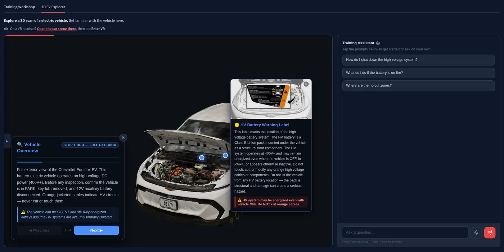
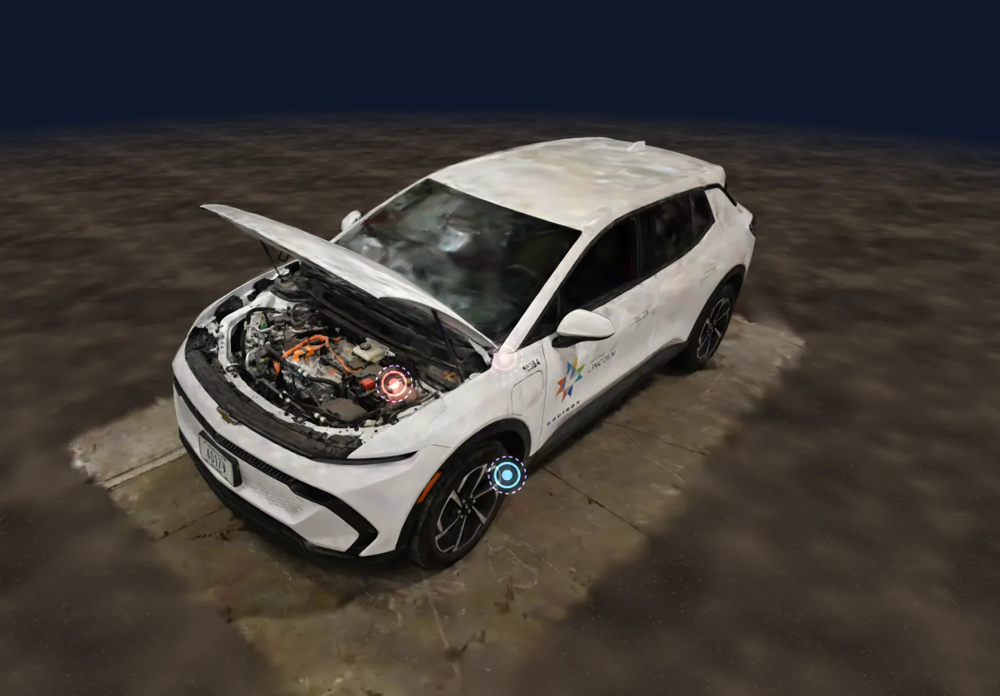

Modernizing EV Emergency Response Training Through XR and AI
Irfan Gazi, Nathan Huynh, Kyungki Kim

Abstract
Electric vehicle adoption is growing in Nebraska, and first responders increasingly meet EV battery fires, damaged charging systems and high-voltage components at the scene. Many rural communities rely on volunteer firefighters, EMS crews, police and towing professionals, who have limited access to specialised EV training: courses are held in person, and travel, scheduling and cost keep many responders away. This project, sponsored by the National Laboratory of the Rockies (NLR) with the Nebraska Clean Cities and Communities Coalition (NEC4), makes that training available anytime and anywhere. We built a free, on-demand training portal that runs in a web browser or a VR headset. A 360-degree recording of a live training event lets a responder sit in on the classroom lesson and the vehicle walkaround. 3D scans of electric vehicles let them inspect a car from any angle and open labelled hotspots for high-voltage systems, battery locations, emergency disconnects and manufacturer-specific features. An AI learning assistant answers questions by text or voice, drawing on EV safety manuals, emergency response guides and the instructors’ answers from the workshop, and cites the documents behind each answer. Together, these turn a one-time classroom session into training a responder can return to whenever they need it.
Immersive Training Video
The 360-degree recording of the training plays around the viewer. A floating panel carries the video controls, quick questions and the chat, so a responder can ask about what they are watching without leaving it.
3D EV Explorer
A full 3D scan of each vehicle can be viewed from any angle. Hotspots open safety information for that part of the car, and the training assistant sits beside the model for anything the hotspot does not cover.

